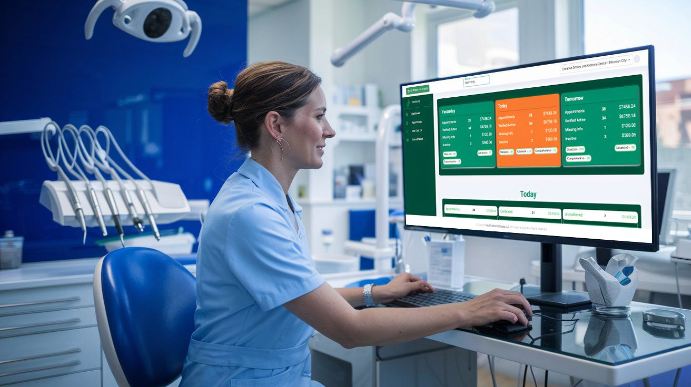

Why DentTracks is the Most Flexible Dental Software for Growing Practices
Running a growing dental practice means dealing with new challenges every day. As your practice expands, you will need a system that can adapt to these changes. Whether it is managing more patients, handling a larger team, or organizing more complex tasks, you need software that grows with you. That’s exactly what DentTracks provides.
It’s not just another dental management tool. It’s a flexible and scalable solution designed to support your practice’s growth while keeping everything running smoothly. Let’s explore why it’s the most flexible dental software for practices on the rise.
1. Scalable Features for Growing Practices
As your practice expands, so do your needs. The software you started with might not be enough anymore, and that’s where this system comes in. It’s designed to grow alongside you, no matter how big your practice becomes.
- Multi-location Management: Whether you’re adding more locations or already managing several, you can easily track patient data, appointments, and staff across multiple offices.
- Customizable Modules: You can add features as your practice grows—whether it’s tracking financials, communicating with patients, or managing inventory. The software adjusts to fit your specific needs.
It’s easy to scale and customize, ensuring it always works for your practice.
2. Efficient Operations for Better Workflow
Running a dental practice means managing a lot of details. With more patients and staff, you need a system that streamlines your operations and keeps things organized. This software does just that by automating time-consuming tasks:
- Smart Scheduling: It automatically checks availability, books appointments, and sends reminders to patients. This helps reduce errors and saves valuable time.
- Quick Billing: Automating insurance claims, tracking payments, and generating invoices helps reduce the time spent on financial tasks, allowing your staff to focus more on patient care.
- Centralized Patient Data: Everything about a patient is stored in one place—appointments, treatment history, and insurance information—making it easy to access whenever needed.
These features help you run a more efficient practice, saving time and reducing manual work.
3. Seamless Integration with Existing Systems
Changing all your current systems just to use new software can be a headache. Fortunately, this system is designed to integrate easily with what you already use, so there’s no disruption to your practice.
- Cloud-Based Access: You and your team can access the software from anywhere, whether you’re in the office or at home, making it more flexible for busy schedules.
- Smooth Data Syncing: Whether it’s syncing with your calendar, payment system, or communication tools, everything works together seamlessly.
You don’t have to change everything to make it work—it fits right into your existing workflows.
4. Better Patient Care with Personalized Communication
As your patient base grows, it’s important to keep each patient feeling valued and informed. This software helps with that by offering personalized communication tools.
- Appointment Reminders: Patients get automated reminders before their appointments, reducing no-shows and last-minute cancellations.
- Online Booking: Patients can book their own appointments at their convenience through an easy-to-use online system, making it more convenient for them and reducing your team’s workload.
- Follow-Ups: Automated follow-up messages or health tips can be sent based on each patient’s treatment history, improving their experience and keeping them engaged.
This makes it easier to stay connected with patients and keeps them coming back.
5. Clear Reporting and Insights
As your practice grows, having access to data and insights is essential for making informed decisions. The software provides easy-to-understand reports that help you track your practice’s performance and pinpoint areas for improvement.
- Patient Trends: Track patient booking trends, cancellations, and follow-up visits to better understand their behavior and needs.
- Financial Overview: You can see exactly how your practice is performing financially—how much revenue you’re bringing in, which treatments are most popular, and where you might be overspending.
- Custom Reports: Create specific reports based on what matters most to your practice, whether it’s operational efficiency, patient satisfaction, or revenue.
Having access to real-time data helps you make smarter decisions and ensures your practice runs efficiently.
6. Security and Compliance You Can Count On
Handling patient data securely is a top priority. As your practice grows, ensuring that all patient information is safe and that you comply with regulations becomes even more important.
- Encrypted Data: All patient information is securely stored and protected from unauthorized access.
- Compliance Tools: The software helps ensure your practice stays compliant with regulations like HIPAA, making it easier for you to meet the necessary legal requirements.
You can rest easy knowing that your patient data is secure and that you’re meeting all the required regulations.
The Perfect Solution for Growing Practices
Whether you’re adding more locations or seeing more patients, this software is designed to grow with you. It provides everything you need to manage a growing practice—efficiency, flexibility, and scalability. From simplifying scheduling and billing to improving communication with patients and providing detailed reports, this system keeps your practice running smoothly, so you can focus on what really matters: providing excellent care.
Ready to grow your practice without the stress? Try DentTracks today and see how it can help you streamline operations, improve patient satisfaction, and take your practice to the next level.